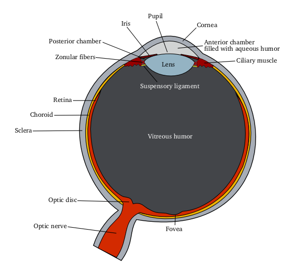

A visão é um dos principais sentidos humanos. Ela permite interpretar luz, cores, formas e movimentos.

A ótica humana estuda como o olho recebe a luz, processa informações e transforma estímulos visuais em imagens interpretadas pelo cérebro.
Primeira estrutura que recebe a luz e ajuda na focalização.
Responsável pelo ajuste do foco em diferentes distâncias.
Transforma luz em sinais enviados ao cérebro.